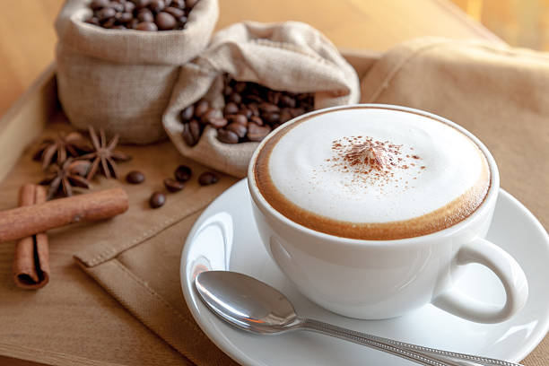
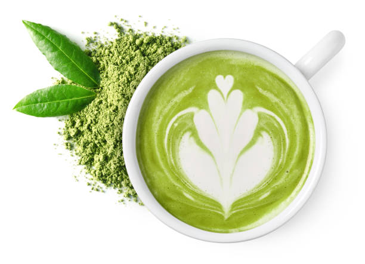

Contact-ទំនាក់ទំនង
☎️ 0886161785📠069519088
✅ Telegram D'Bolla cafe
✅ Facebook Page D'Bolla Cafe
ABA QR

Our company is looking for a cafe. If you are looking for an exciting place to work, please take a look at the list of qualifications below.Responsibilities for cafeServe in the lead capacity when other Food & Beverage management is not presentAssists in the training of other Cast MembersAssure that all service standards and operating procedures are adhered to at all timesAssist in various administrative duties as assigned by Food & Beverage ManagementThe ability to complete opening and closing side-work as assignedMaintain property service standardsProvide lateral service wherever is necessary in the propertyEmbody mission, vision and values of the property and ICAC division dailyEstablish and maintain monthly inventory control system to minimize expense, spoilage and lossEnsure Club and Café associates adhere to state and federal laws
A latte consists of one or more shots of espresso, served in a glass (or sometimes a cup), into which hot steamed milk is added. The difference between a latte and a cappuccino is that the cappuccino is served in a small 140 mL cup with a layer of thick foam on top of the milk, and a latte is served in a larger 230 mL glass (or cup), without the layer of thick foam. Thus, a latte is much milkier than a cappuccino, resulting in a milder coffee taste. The way the milk is steamed for a latte results in very fine bubbles being incorporated in the hot milk, this microfoam can be poured in such a way as to form patterns in the white microfoam and brown crema (latte art).


A cappuccino is the perfect balance of espresso, steamed milk and foam. This coffee is all about the structure and the even splitting of all elements into equal thirds. An expertly made cappuccino should be rich, but not acidic and have a mildly sweet flavouring from the milk.


An americano is just water and espresso. It'll either be served 1/2 and 1/2 or 1/3 espresso to 2/3 water, depending on the coffee shop in question or how you've chosen to brew it. Traditionally, there will be no milk but some people may add it depending on their personal preference.


Matcha latte is a beverage that originates from Japan. It's made from finely ground green tea leaves that are mixed with steamed milk. Unlike other teas, where you steep the leaves and strain them, matcha is made by whisking the powder into water or milk.
